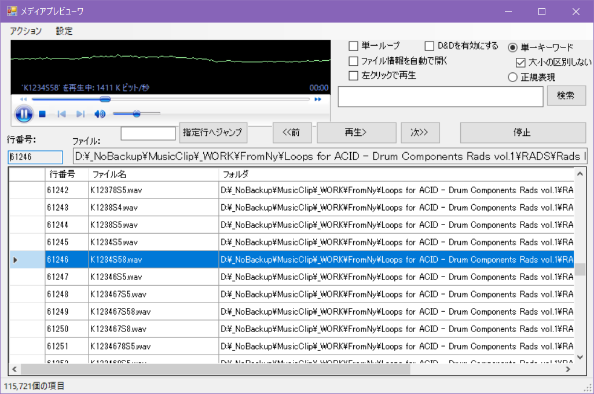

けんぼうの音声試聴ツール
音声試聴ツール（メディアプレビューワ）を更新したので、ここに公開します。
今回のリリースは「バージョンv1.0」です。（2022/05/18現在）
過去のドキュメント:
バージョンv0.9からの変更点:
- ドラッグ＆ドロップに対応※
- 検索機能の強化
- その他不具合の対処
※ドラッグしてWav又はMidファイルをDAW（Ableton Live, FL Studio, ...など）に張り付けることが出来るようになりました。
メディアプレビューワ（v1.0）のスクリーンショット：

メディアプレビューワ v1.0の動作要件：
前バージョンから特に変わりはありません。こちらを参照してください
メディアプレビューワのライセンス：
前バージョンから特に変わりはありません。こちらを参照してください
メディアプレビューワのダウンロード：
本ページ最下のダウンロードリンクをクリックしてMediaPreviewer1.0.zipをダウンロードします。
メディアプレビューワのインストール：
古いバージョン（v0.9）を既にインストールしている場合：
- メディアプレビューワv0.9をインストールしてあるフォルダとは別のフォルダを新しく作り、ダウンロードしたMediaPreviewer1.0.zipの内容を展開します。
- 展開したファイルの中にMediaPreviewer.exeがあればインストールは成功です。
- インストールしたMediaPreviewer.exeファイルを右クリックし「ショートカットの作成」を行います。それをお好きな場所にコピーすれば、そこから起動が出来るようになります。
メディアプレビューワv1.0を新規にインストールする場合：
- インストールしたいフォルダを新しく作り、ダウンロードしたMediaPreviewer1.0.zipの内容を展開します。
- 展開したファイルの中にMediaPreviewer.exeがあればインストールは成功です。
- インストールしたMediaPreviewer.exeファイルを右クリックし「ショートカットの作成」を行います。それをお好きな場所にコピーすれば、そこから起動が出来るようになります。
操作マニュアル（v0.9からの差分）：
ドラッグ&ドロップ：
- 右上の「D&Dを有効にする」をチェックします。
- メディアプレビューワのファイル一覧から対象のファイルをマウスで左クリックし左ボタンを押したままドロップ先のウインドウ（DAWなど）の上におき、左ボタンを放します。
単一キーワード検索：
- アルファベットの大文字と小文字を区別しないで検索する場合は右上の「単一キーワード」ラジオボタンの「大小の区別しない」チェックボックスにチェックを入れて検索を行います。
その他：
バグの報告や使ってみた感想、次期バージョンへの要望などはツイッターかメールまでどうぞ。
ダウンロード↓
メディアプレビューワ v1.0
Topへ戻る
ホームへ戻る